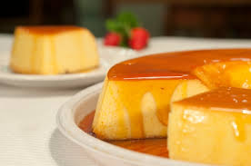

O pudim é uma das sobremesas mais amadas do Brasil. Cremoso, doce e coberto com uma deliciosa calda de caramelo.
Essa sobremesa surgiu no século XVI dentro dos conventos portugueses. E foi ensinada para nós brasileiros, já que eles eram nossos colonizadores, pegamos o gosto pelo doce bem rápido. Nessa época o pudim era feito de leite ainda, não de leite condensado.